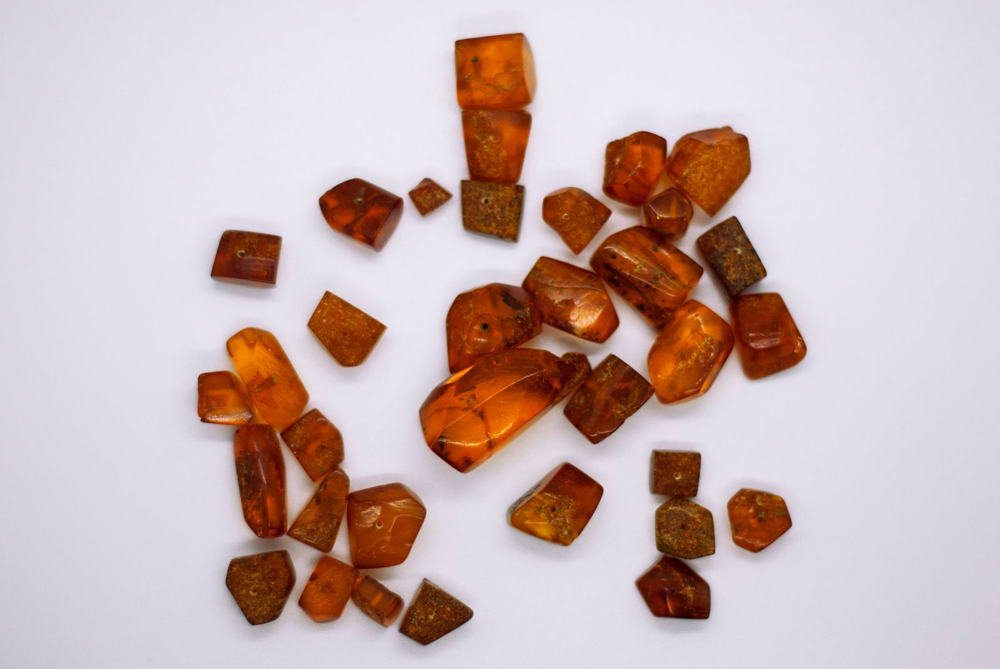

The Harrowgate Bequest: 214 pieces, 61 labels corrected
Client
Harrowgate Museum of Natural History
Material
Baltic amber bequest, catalogued 1960s
Pieces
214 examined, none sampled away
Record
61 re-identifications entered
The brief
A bequest of Baltic amber, catalogued once in the 1960s and displayed from that catalogue ever since. Before a gallery redisplay, the museum wanted the labels checked — all of them, not a sample — and wanted to know which pieces could carry the new gallery’s story.
The decisions
Every piece was re-examined under the microscope rather than spot-checked; a wrong rate found by sampling would have left the gallery guessing which labels to trust. The 1960s labels were recorded as claims, in full, before any correction — a label is evidence about the collection’s history even when it is wrong about the specimen. Resin checks were run on the pieces whose stories did not add up, with spectroscopy arranged through a university laboratory.
The outcome
61 of 214 pieces — 29% — were re-identified. Two star pieces were downgraded, in print: the “Cretaceous fern in Baltic amber” failed twice over, since Baltic amber is Eocene, roughly 44 million years old, and its inclusion proved to be a modern plant fragment in copal; and the celebrated “amber flower” was a fungal fruiting structure, beautiful and not a flower. The museum redisplayed with the corrections on the labels. Both downgraded pieces stayed in the gallery — with better stories than the ones they lost.
“Edith corrected a third of our labels and made the gallery better for it. The two downgrades are now the most-read labels in the room — visitors trust a museum that shows its corrections.”
— Dr. A. Whitfield, Curator of Palaeontology, Harrowgate Museum of Natural History
